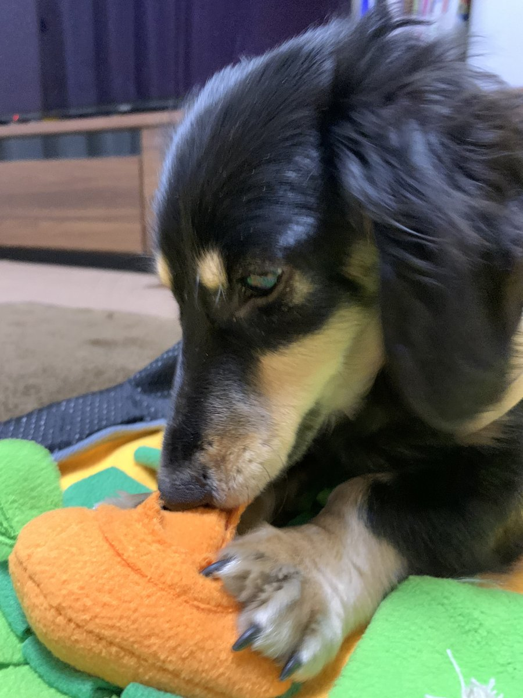

ラム・フィースト
主食／総合栄養食公式上の特徴：ラムを使うフリーズドライの主食候補。
合いやすい悩み：牛・鶏を避けて別の動物性原料を検討したい、少量で食いつきを確認したい。
口コミ傾向：食いつき、ふやかしやすさ、旅行への携帯性が挙がる一方、継続費用の高さも指摘。
犬種情報：公式な犬種指定はなし。口コミにはチワワ、トイプードル、柴犬、ジャックラッセルの使用例。犬種より原材料・体重・予算で判断。
ラムを避ける犬、療法食中は候補外。
散歩、旅行、ごはん。必要な場面と確認ポイントを先に見て、合うものだけ選べます。

用途別セレクション
ランキングではありません。公式情報と商品表示を基に、比較しやすい候補をまとめています。
K9 NATURAL 選び方ガイド
公式上の特徴：ラムを使うフリーズドライの主食候補。
合いやすい悩み：牛・鶏を避けて別の動物性原料を検討したい、少量で食いつきを確認したい。
口コミ傾向：食いつき、ふやかしやすさ、旅行への携帯性が挙がる一方、継続費用の高さも指摘。
犬種情報：公式な犬種指定はなし。口コミにはチワワ、トイプードル、柴犬、ジャックラッセルの使用例。犬種より原材料・体重・予算で判断。
ラムを避ける犬、療法食中は候補外。
公式上の特徴：ビーフを使うフリーズドライの主食候補。
合いやすい悩み：食べムラがあり、牛由来原料を問題なく食べられる犬の主食比較。
口コミ傾向：食いつきを評価する声が多いが、合わない例や価格負担もある。体調変化は個別体験で効果保証ではない。
犬種情報：公式な犬種指定はなし。トイプードル、ポメラニアン、チワワ、シニア犬の使用例。
牛由来原料を避ける犬、脂質・カロリー制限中は成分確認。
公式上の特徴：ラムとキングサーモンを主原料に含む。魚だけの単一たんぱく商品ではない。
合いやすい悩み：肉と魚を含む主食候補を比較したい。
口コミ傾向：ローテーション候補、食いつきに関する声がある。魚由来原料だけを求める用途には不適合。
犬種情報：公式な犬種指定はなし。犬種名よりラム・魚・卵など全原材料の適合で判断。
ラム、魚、卵など該当原料を避けている犬。
公式上の特徴：ラムの胃袋100％。主食ではなく、食事へのトッピングや間食向け。
合いやすい悩み：食が細い、いつものフードへの少量トッピングを試したい。
口コミ傾向：強い匂い、崩しやすさ、少量トッピングでの食いつきが多く語られる。匂いを負担に感じる飼い主もいる。
犬種情報：公式な犬種指定はなし。トイプードル、ポメラニアン、ボーダーコリーの使用例。
ラムを避ける犬、脂質制限中、主食の代用を探している場合。
公式上の特徴：牛の胃袋100％。ラム版より脂質・カロリーが高い商品表示。
合いやすい悩み：牛由来原料を食べられ、少量のトッピングや携帯おやつを比較したい。
口コミ傾向：ラムとのローテーション、食いつき、散歩用おやつとしての使用例。好みは個体差がある。
犬種情報：公式な犬種指定はなし。年齢・犬種より牛への適合と総摂取カロリーで判断。
牛由来原料を避ける犬、体重・脂質管理中。
「下痢が治る」「この種類なら必ず合う」とは判断できません。急な切替を避け、症状が続く場合は獣医師へ。根拠：K9Natural取扱商品情報、K9ナチュラル公式案内

袋に入れて結ぶだけ。散歩、車移動、宿泊時の排泄物処理に使いやすい。
【2個セット】 うんちが臭わない袋 BOS (ボス) ペット | 水色 SSサイズ 200枚×2個 | 日本製
犬の大きさと処理物に合う袋サイズを確認。防臭は完全保証ではありません。
レビューは使用例として確認し、仕様・原材料は商品表示を優先しています。
楽天市場で現在の情報を見る
ペットボトルに装着し、給水皿とおしっこ跡の洗浄を切り替えやすい2WAY。
犬 水飲み シャワー 給水器 ペットボトル装着するだけ 散歩 水入れ おしっこ ペット 送料無料 犬用 ハンディ シャワー M リッチェル お出かけ 水飲み 水 給水ボトル 水トイレエチケット ウォーターボトル お出掛け 携帯水筒 散歩こぼれない ユウランプ ギフト 敬老の日
対応するペットボトル、犬の大きさ、容量を確認。
レビューは使用例として確認し、仕様・原材料は商品表示を優先しています。
楽天市場で現在の情報を見る
散歩や旅行後の足・体をその場で拭きやすい。厚さ、枚数、香料の有無で比較。
【お得なクーポン配布中】ペット用ウェットティッシュ 犬 猫 大判 厚手 ノンアルコール 無香料 詰替用150枚 万能ウェットタオル 足拭き 体拭き 消臭 除菌 国産 日本製 ウェットシート クリンポイ PEPPY
用途、成分、対象部位を確認。目や口の周りは商品表示に従ってください。
レビューは使用例として確認し、仕様・原材料は商品表示を優先しています。
楽天市場で現在の情報を見る
吸収量、サイズ、枚数を選べる宿泊時の基本用品。普段使う銘柄を持参しやすい。
【4,480円→SALE 3,980円｜19日10:00～24日9:59】Famy ペットシーツ JPPMA認証 うす型 薄型 1回使い切り レギュラー 800枚/ ワイド 400枚/ スーパーワイド 204枚 厚型 3回吸収 レギュラー 400枚/ ワイド 200枚/ スーパーワイド 104枚 ペットシート トイレシート 犬 猫 W消臭
犬の排尿量、トレー寸法、宿のルールに合うサイズを確認。
レビューは使用例として確認し、仕様・原材料は商品表示を優先しています。
楽天市場で現在の情報を見る
車内、宿、キャンプでトイレ位置を決めやすい。折りたたみ寸法と防水性が比較軸。
シリコントイレマット 犬 トイレトレー 60×40cm 洗える 防水 滑り止め フチあり はみ出し防止 丸洗い可能 柔らか素材 食事 ランチョンマット 折りたたみ 旅行 帰省 小型犬 中型犬 肉球 おしゃれ エサ台
シーツ固定方法、使用時寸法、収納時寸法を確認。
レビューは使用例として確認し、仕様・原材料は商品表示を優先しています。
楽天市場で現在の情報を見る
後部座席の泥、毛、よだれ対策。防水、滑り止め、開口部、洗いやすさで比較。
【楽天1位】大型犬もOk！PETTENA ペット用 ドライブシート 犬 車 シート マット ペット ボード入り ドライブベッド 全車種対応 防水 滑止め 傷つきにくい 取り付け簡単 掃除しやすい 後部座席 車保護 カーシートカバー GW 母の日
車種、座席寸法、シートベルト穴、飛び出し防止器具との併用を確認。
レビューは使用例として確認し、仕様・原材料は商品表示を優先しています。
楽天市場で現在の情報を見る
片手で給水しやすく、残水を戻せる商品もある。容量、漏れにくさ、洗いやすさが比較軸。
【2個以上で5%OFF】【INULABO(イヌラボ)】 ペット ウォーターボトル 犬 水筒 給水ボトル 給水器 ウォーターボトル 犬 散歩 お散歩グッズ 漏れ防止 ワンタッチ 日用品 熱中症対策 550ml - 300ml
飲み口の大きさ、容量、ロック方法を確認。
レビューは使用例として確認し、仕様・原材料は商品表示を優先しています。
楽天市場で現在の情報を見る
宿や車内の休憩場所に敷きやすい。素材、洗濯方法、滑り止め、サイズで比較。
＼ シーズン終盤★お得な2枚セット登場！／ 瞬間冷却 ひんやりマット 冷感敷きパッド シングル 30×40cm 90×90cm 4.2kg 90×140cm 6.6kg クールマット 体圧分散 接触冷感 冷感寝具 ジェルマット夏用快 猫犬 抗菌防ダニ 涼感マット 涼感寝具
熱中症を防ぐ保証はありません。気温管理、給水、休憩を優先してください。
レビューは使用例として確認し、仕様・原材料は商品表示を優先しています。
楽天市場で現在の情報を見る
フリーズドライタイプ。主食かトリーツか、原材料、戻し方、給与量を商品単位で確認しやすい。
★エントリーでP9倍以上★【ケーナインナチュラル】K9ナチュラル フリーズドライ ラム・グリーントライプ 200g【15時までの注文で当日発送 正規品 フリーズドライフード 犬用】
お腹の不調を治す商品ではありません。切替は少量から行い、体調不良時は獣医師へ。
レビューは使用例として確認し、仕様・原材料は商品表示を優先しています。
楽天市場で現在の情報を見る
原材料数が少ない商品は比較しやすい。携帯性、割りやすさ、カロリーも確認。
ひとくちサーモン 30g◆北海道産 犬 おやつ 無添加 国産 犬猫のおやつシズカ sizuka エゾマルシェ ドッグフード ペット 好き 手作り 鮭 ジャーキー 鮭 ノーズワーク 知育玩具
無添加の範囲を表示で確認。間食は主食量と総カロリーを調整してください。
レビューは使用例として確認し、仕様・原材料は商品表示を優先しています。
楽天市場で現在の情報を見る
ブラシ付きカップで足先を包んで洗うタイプ。雨上がりや土のドッグラン後に使いやすい。
犬 足洗い カップ&ブラシ JABLLA ジャブラ 【新色登場】 特許取得 高級シリコン ブラシ 柔らかい 簡単 足洗い お散歩 ペット グッズ 散歩 携帯 泥汚れ 清潔 肉球ケア シャワーブラシ 小型犬 中型犬 対応 犬用 猫 シリコンブラシ メディア紹介 NHK テレ東
足の大きさ、ブラシの硬さ、分解して洗えるかを確認。嫌がる犬には無理に使わないでください。
レビューは使用例として確認し、仕様・原材料は商品表示を優先しています。
楽天市場で現在の情報を見る
処理袋を収納するケースやポーチ。密閉方法、取り付け方、洗いやすさで比較。
BITE ME バイトミー ビション プーバッグマナーポーチ(犬 散歩 お出かけ マナーポーチ マナー袋ポーチ マナー袋ケース お散歩 散歩グッズ おしゃれ かわいい 携帯 持ち運び コンパクト プーバッグ うんち袋 うんちバッグ ゴミ袋 ストラップ付き POOP BAG トリーツポーチ)
防臭性能と完全密閉は同じではありません。袋との併用方法を確認。
レビューは使用例として確認し、仕様・原材料は商品表示を優先しています。
楽天市場で現在の情報を見る
移動時の囲われた居場所として使えるハードタイプ。扉、持ち手、車載固定、犬の姿勢で比較。
リッチェル キャンピングキャリー ダブルドア ファイン ファインR S 犬 猫 キャリーケース ペットキャリー ハードキャリー クレート 小型犬 超小型犬 お出かけ 通院 車 ドライブ シートベルト固定 ハウス 防災 避難 レビュープレゼント
犬が立つ・向きを変える・伏せるための内寸、耐荷重、車での固定方法を確認。
レビューは使用例として確認し、仕様・原材料は商品表示を優先しています。
楽天市場で現在の情報を見る
ハーネスと車体側をつなぐ補助用品。長さ調整、金具、車側の適合を比較。
＼全商品ポイント5倍／ ペット用シートベルト ペット用 シートベルト 犬 猫 車 ドライブ お出かけ 飛び出し防止 落下防止 簡単取付 散歩 リード 後部座席 車内 家 外出 安全 安心 4色 飛び出し防止 いぬ ねこ おすすめ 人気 小型犬 大型犬 中型犬
首輪だけには接続せず、商品表示と車両適合を確認。衝突安全性能は個別商品の試験情報を確認。
レビューは使用例として確認し、仕様・原材料は商品表示を優先しています。
楽天市場で現在の情報を見る
散歩、ドライブ、宿泊で水や食事を与えやすい折りたたみ式。容量、深さ、洗いやすさで比較。
＼最大500円OFFクーポン配布中／【BITE ME バイトミー ポータブル折りたたみボウル】犬 折りたたみ ボウル 犬 水飲み ボウル 携帯用 シリコン フードボウル コンパクト カラビナ付き 散歩用 旅行用 軽量 小型犬 中型犬 韓国ブランド 全8色
素材、耐熱温度、食品接触用途、犬の口の大きさを確認。
レビューは使用例として確認し、仕様・原材料は商品表示を優先しています。
楽天市場で現在の情報を見る
被毛や腹側の泥はねを減らし、帰宅後の手入れ時間を抑えやすい。
犬用レインコート 可愛いチェック柄 犬 レインコート ドッグウェア 雨具 犬服 小型犬 中型犬 いぬ フード付き防水 着せやすい カッパ ポンチョ 合羽 防水 梅雨 着脱簡単 マジックテープ ポリエステル素材 可愛い ペット 軽量 サイズ豊富 リード穴 送料無料 yp rm
首回り、胸回り、着丈、排泄部分、反射材、蒸れやすさを確認。完全防水は商品表示を優先。
レビューは使用例として確認し、仕様・原材料は商品表示を優先しています。
楽天市場で現在の情報を見る
舐める行動に使うマット。吸盤、溝の深さ、洗いやすさ、食品接触用途を比べやすい。
ペット 早食い防止皿 リックマット【メール便 送料無料】 舐める なめる リックパッド 犬 早食い防止 シリコン 食器 早食い 吸盤 お風呂 シャワー 入浴サポート 小型犬 猫 クリスマス 思い出 おうち時間 sat
誤飲を防ぐため見守って使用し、噛み癖のある犬には破損がないか確認。
レビューは使用例として確認し、仕様・原材料は商品表示を優先しています。
楽天市場で現在の情報を見る
持ち運べる休憩場所。収納寸法、洗濯方法、底面の滑り止め、犬の体格で比較。
＼レビュー1600件超／ ドライブベッド ドライブボックス 犬 車 シート ペット 洗える 獣医師推奨 耐荷重15kg 多頭飼い 2匹 伸縮リード2本付 滑り止め付 厚手ふかふか クッション 肩掛け 2way 助手席 後部座席 軽自動車対応 小型犬 中型犬 旅行 お出かけ
宿の持込ルールと設置場所を確認。慣れた匂いのタオルも役立ちます。
レビューは使用例として確認し、仕様・原材料は商品表示を優先しています。
楽天市場で現在の情報を見る
足先や被毛の水分を拭き取りやすい用品。吸水性、乾きやすさ、サイズ、洗濯方法で比較。
マラソン期間限定ポイント3倍【圧倒的高評価4.75!】ペット タオル 吸水 吸水タオル 超吸水 速乾 ペット用 犬 猫 バスタオル シャワー シャンプー マイクロファイバー 体拭き ドライヤー 時間短縮 5カラー 60cmx115cm クリスマス プレゼント
強くこすらず、皮膚や耳の状態を確認しながら使ってください。
レビューは使用例として確認し、仕様・原材料は商品表示を優先しています。
楽天市場で現在の情報を見る
段差を小さくする補助用品。耐荷重、踏面、滑り止め、車高、収納寸法が比較軸。
【楽天1位】スロープ 犬 ペットスロープ ペットステップ 2つ折り ペット用スロープ 階段 ペット用 踏み台 ドッグスロープ ドッグステップ 犬用 ゆるやか 折りたたみ 屋外 車用 ステップ ペット用階段 クッション 段差 犬用階段 小型犬 老犬 1年保証 ■[送料無料]
飛び降りを完全に防ぐものではありません。設置中は犬を支え、商品耐荷重を確認。
レビューは使用例として確認し、仕様・原材料は商品表示を優先しています。
楽天市場で現在の情報を見る
座面のずれや姿勢の不安定さを抑える補助用品。固定方法、側面、洗濯、車両寸法で比較。
【予約9月25日順次発送】【新色追加/まとめ買い対象】【ご愛顧SALE】小型犬 犬用 ベッド 車 お出かけ アウトドア 撥水 防災 手洗いOK 洗える ペットドライブ用品 コーデュラ交換OK/返品不可コーデュラドライブベッド M 〜7Kg (飛び出し防止フック1本付)
衝突安全を保証する用品ではありません。車載固定とハーネスの説明を確認。
レビューは使用例として確認し、仕様・原材料は商品表示を優先しています。
楽天市場で現在の情報を見る
凹凸で食べる速度を調整する食器。溝の形、洗いやすさ、素材、鼻の長さで比較。
【食事時間が3倍に】ペット 早食い防止食器 フードボウル 早食い防止 食器 衛生的 滑り止め ダイエット こぼれにくい 省スペース 丸飲み防止 犬 早食い 小型犬 中型犬 大型犬 餌入れ エサ入れ 丸洗い 熱湯消毒可能 胃捻転 消化不良 ダイエット 肥満防止 嘔吐防止 迷路
むせや嘔吐が続く場合は用品だけで判断せず獣医師へ相談してください。
レビューは使用例として確認し、仕様・原材料は商品表示を優先しています。
楽天市場で現在の情報を見る
犬が透明ドラムを回すとフードが少量ずつ出る知育型の食事用品。出口を約11〜16mmの6段階で調整でき、部品を外して洗える。
ドギーマン わんこのでるでる自飯器 犬 犬用品食器 給水器 給餌器 自動給餌器 送料無料 【SK01465】
公式対象は超小型・小型犬です。粒の大きさを確認し、最初は必ず見守って使用してください。噛み壊す犬、回転に強く反応してフードを飛散させる犬、ウェットフードには向きません。
レビューは使用例として確認し、仕様・原材料は商品表示を優先しています。
楽天市場で現在の情報を見る
ごほうび、袋、小物を分けて携帯。片手での開閉、洗いやすさ、装着方法で比較。
【まとめ買い対象】犬 小型犬 犬用 マナーポーチ 消臭機能付き うんち袋 お散歩用品 ウンチ処理袋 トリーツポーチ PVC 交換OK/返品不可 メール便可マナーポーチ
食品を直接入れられるか、排泄物用品と分離できるかを確認。
レビューは使用例として確認し、仕様・原材料は商品表示を優先しています。
楽天市場で現在の情報を見る
首輪やハーネスに連絡先を付ける補助用品。文字の読みやすさ、耐水性、重さで比較。
迷子札 犬 タグ ネコ お名前シール ペット 名入れ ドッグタグ 災害グッズ おなまえシール 災害対策 犬用 猫用 ペットタグ 防災 迷子防止 名札 首輪 イヌ ペット用品 日本製 ノンアイロン 迷子札 猫 迷子札 軽量 迷子 ペット ネームタグ プレゼント ギフト グッズ 贈り物
個人情報の表示範囲を決め、鑑札・マイクロチップ登録情報も最新にしてください。
レビューは使用例として確認し、仕様・原材料は商品表示を優先しています。
楽天市場で現在の情報を見る
牛の胃袋100％の栄養補助食。主食ではなく、いつもの食事へのトッピングや間食として量を調整。
★エントリーでP9倍以上★【ケーナインナチュラル】K9ナチュラル フリーズドライ ビーフ・グリーントライプ 250g【15時までの注文で当日発送 正規品 フリーズドライフード 犬用】
ラム版より脂質・カロリーが高い商品表示です。体重管理や脂質制限中は成分値を確認し、必要なら獣医師へ。
レビューは使用例として確認し、仕様・原材料は商品表示を優先しています。
楽天市場で現在の情報を見る
ラムを使った総合栄養食。まず少量サイズで食いつき、便、体重、切替時の変化を記録しやすい。
★エントリーでP9倍以上★【ケーナインナチュラル】K9ナチュラル フリーズドライ ラム・フィースト 500g【15時までの注文で当日発送 正規品 フリーズドライフード 犬用 成犬 老犬 子犬】
グリーントライプやトリーツとは用途が異なります。給与量と戻し方は商品表示を優先。
レビューは使用例として確認し、仕様・原材料は商品表示を優先しています。
楽天市場で現在の情報を見る
ビーフを使った総合栄養食。ラムとの違いは体質への適合を断定せず、原材料と成分値で比較。
★エントリーでP9倍以上★【ケーナインナチュラル】K9ナチュラル フリーズドライ ビーフ・フィースト 500g【15時までの注文で当日発送 正規品 フリーズドライフード 犬用 成犬 老犬 子犬】
特定たんぱく質を避けている場合は全原材料を確認。療法食の代用にはしないでください。
レビューは使用例として確認し、仕様・原材料は商品表示を優先しています。
楽天市場で現在の情報を見る
ラムとキングサーモンを主原料にした総合栄養食。魚由来原料を含む候補として比較できる。
★エントリーでP9倍以上★【ケーナインナチュラル】K9ナチュラル フリーズドライ ラム＆キングサーモン・フィースト 500g【15時までの注文で当日発送 正規品 フリーズドライフード 犬用 成犬 老犬 子犬】
魚だけの単一たんぱく商品ではありません。アレルギーが疑われる場合は自己判断で試し続けないでください。
レビューは使用例として確認し、仕様・原材料は商品表示を優先しています。
楽天市場で現在の情報を見る
原材料はチーズ。星型の小粒で、トレーニング時の少量ごほうびに分けやすい。
犬 おやつ 無添加 国産 Bon rupa ( ボンルパ )「京」 星のちーずさま 30g 犬用 猫用 トリーツ おやつ チーズ 猫 犬 犬おやつ かわいい
間食用です。脂質42.7％以上・537kcal/100gの商品表示のため、乳製品を避ける犬や体重管理中は量に注意。喉詰まり防止のため見守って与えてください。
レビューは使用例として確認し、仕様・原材料は商品表示を優先しています。
楽天市場で現在の情報を見る
約1.5cmの角切り鮭。魚素材の小粒おやつとして、サイズと与える個数を管理しやすい。
【公式】ドッグツリー 角切りミニ 鮭(さけ) S 15g | 無添加 国産 サケ 犬 おやつ 犬のおやつ 犬おやつ 犬用おやつ ドッグフード DOGTREE
間食用です。魚を避ける犬には与えず、骨や硬さ、原材料、給与量を商品表示で確認。
レビューは使用例として確認し、仕様・原材料は商品表示を優先しています。
楽天市場で現在の情報を見る
生のささみを主原料に、天然食材から栄養を摂る設計の国産・無添加ドッグフード。
【お試しサイズ】ドッグツリー ささみと25種類のこだわり具材 50g / 馬肉と25種類のこだわり具材 / かつおと26種類のこだわり具材 50g | 無添加 国産 ドッグツリー ドッグフード ささみ 馬肉 かつお 生肉 グルテンフリー 緑イ貝 DOGTREE
主食として使う場合は総合栄養食表示、給与量、全原材料、鶏への適合を現品で確認。
レビューは使用例として確認し、仕様・原材料は商品表示を優先しています。
楽天市場で現在の情報を見る
生の馬肉を主原料にした国産・無添加ドッグフード。動物性原料を変えて比較したい時の候補。
＼ マラソン期間ポイント10倍！ ／【 50g ／ 600g ／ 1.8kg(600g×3袋) 】馬肉と25種類のこだわり具材【 犬 おやつ 国産 無添加 ドッグツリー DOGTREE 高品質 健康サポート 厳選具材 バランス 】食材本来の旨みと栄養素が摂れるドッグフードです。
馬肉以外の原材料も含みます。避けたい原料、保証成分、給与量を確認。
レビューは使用例として確認し、仕様・原材料は商品表示を優先しています。
楽天市場で現在の情報を見る
かつおを主原料とする肉不使用の国産・無添加ドッグフード。魚主体の候補を比べたい時に。
＼ マラソン期間ポイント10倍！ ／【 50g / 600g / 1.8kg(600g×3袋) 】カツオと26種類のこだわり具材 犬 ドッグフード 無添加 国産 ドッグツリー おやつ 犬エサ 犬のごはん 無添加ドッグフード カツオ 国産ドックフード 無添加犬ごはん DOGTREE 高品質
魚以外の全原材料、総合栄養食表示、保証成分を確認。療法食の代用にはしないでください。
レビューは使用例として確認し、仕様・原材料は商品表示を優先しています。
楽天市場で現在の情報を見る
国産・無添加表示の鮭そぼろ。いつもの食事への少量トッピングとして量を調整しやすい。
◇ドッグツリー ふりふり鮭(さけ)そぼろ M 35g | ドッグツリー ふりふり鮭 ドッグフード おやつ トッピング 鮭 さけそぼろ ペットフード 栄養豊富 DHA EPA アスタキサンチン 国産 惣菜 ふりかけ 健康 食事 手作り栄養 愛犬 新鮮 食べやすい タンパク質 調理済み
主食ではありません。魚を避ける犬には与えず、間食量を総カロリーへ含めてください。
レビューは使用例として確認し、仕様・原材料は商品表示を優先しています。
楽天市場で現在の情報を見る
国産・無添加表示の鶏ささみ角切り。小さく分けるごほうびやトッピング候補。
【公式】ドッグツリー 一口角切り 鶏ささみチーズ M 45g | 国産 ささみ チーズ 小型犬 犬 おやつ 犬のおやつ 犬おやつ 犬用おやつ ドッグフード DOGTREE
鶏を避ける犬には不適合。主食と区別し、給与量を確認。
レビューは使用例として確認し、仕様・原材料は商品表示を優先しています。
楽天市場で現在の情報を見る
国産・無添加表示の角切りミニ。小さく分けたごほうび候補。
【公式】ドッグツリー 角切りミニ 牛レバー S 15g / M 35g | 無添加 国産 レバー ヒューマングレード 小型犬 犬 おやつ 犬のおやつ 犬おやつ 犬用おやつ トッピング ドッグフード DOGTREE
牛を避ける犬には不適合。レバーは間食として少量にし、給与量を守ってください。
レビューは使用例として確認し、仕様・原材料は商品表示を優先しています。
楽天市場で現在の情報を見る
国産・無添加表示の焼き芋スティック。肉以外の素材を使った間食候補。
★楽天1位【公式】ドッグツリー 焼き芋スティック S 20g / M 60g | 無添加 国産 焼芋 さつまいも さつま芋 サツマイモ 犬 おやつ 犬のおやつ 犬おやつ 犬用おやつ ドッグフード DOGTREE
糖質とカロリーを含みます。体重管理中は小さく分け、主食量と調整。
レビューは使用例として確認し、仕様・原材料は商品表示を優先しています。
楽天市場で現在の情報を見る
国産・無添加表示のりんごおやつ。小粒で与える個数を決めやすい。
【公式】ドッグツリー 一口角切り りんご S 7g / M 25g | 無添加 国産 りんご 林檎 リンゴ 犬 おやつ 犬のおやつ 犬おやつ 犬用おやつ ドッグフード DOGTREE
果糖を含む間食です。体重管理や持病がある場合は給与量を確認。
レビューは使用例として確認し、仕様・原材料は商品表示を優先しています。
楽天市場で現在の情報を見る
小さなキューブ状のチーズ系おやつ。トレーニング時に個数を決めやすい。
【最大10％OFFクーポン配布中】 ドッグツリー チーズキューブ S10g（犬用おやつ）
乳製品を避ける犬には不適合。脂質・塩分・給与量を確認。
レビューは使用例として確認し、仕様・原材料は商品表示を優先しています。
楽天市場で現在の情報を見る
豚耳を細切りにした噛みごたえのある間食候補。
【2,228円お得！たっぷり大容量】【公式】ドッグツリー 豚耳の細切 500g | お徳用 大容量 まとめ買い 大袋 無添加 国産 豚耳 長持ち 硬め ストレス解消 犬 おやつ 犬のおやつ 犬おやつ 犬用おやつ ドッグフード DOGTREE
豚を避ける犬には不適合。丸飲み、歯の損傷、喉詰まりを防ぐため見守り、サイズを確認。
レビューは使用例として確認し、仕様・原材料は商品表示を優先しています。
楽天市場で現在の情報を見る
国産・無添加表示の七面鳥アキレス。噛みごたえを比較したい犬向けの間食候補。
★楽天4冠【公式】ドッグツリー ターキーアキレス M 30g | 無添加 ターキー アキレス デンタルケア 歯磨きおやつ 犬 おやつ 犬のおやつ 犬おやつ 犬用おやつ ドッグフード DOGTREE
丸飲み、歯の損傷、喉詰まりを防ぐため必ず見守り、犬の口と噛む力に合うサイズを選択。
レビューは使用例として確認し、仕様・原材料は商品表示を優先しています。
楽天市場で現在の情報を見る
国産・無添加表示の小魚おやつ。トッピングや少量のごほうび候補。
【公式】ドッグツリー かえりちりめん S 12g / M 35g | 無添加 国産 ちりめん 煮干し にぼし ニボシ 減塩 魚 犬 おやつ 犬のおやつ 犬おやつ 犬用おやつ ドッグフード DOGTREE
塩分、魚の硬さ、与える量を商品表示で確認。魚を避ける犬には不適合。
レビューは使用例として確認し、仕様・原材料は商品表示を優先しています。
楽天市場で現在の情報を見る
トレーニングや外出時に分けて使いやすいチーズ系おやつ。サイズを選べる。
★楽天1位【公式】ドッグツリー 鶏ささみチーズスティック M 35g | 国産 ささみ チーズ 犬 おやつ 犬のおやつ 犬おやつ 犬用おやつ ドッグフード DOGTREE
乳製品を避ける犬には不適合。脂質・塩分・総カロリーを確認して少量に。
レビューは使用例として確認し、仕様・原材料は商品表示を優先しています。
楽天市場で現在の情報を見る
外出先でのそそう対策に使う吸収ウェア。胴回りと製品サイズで選ぶ。
マナーウェア女の子用Sトラッドテイスト 犬用 おむつ ユニチャーム(36枚入)【マナーウエア】
長時間つけっぱなしにせず、汚れや皮膚の状態を確認して交換。治療用品ではありません。
レビューは使用例として確認し、仕様・原材料は商品表示を優先しています。
楽天市場で現在の情報を見る
男の子の体型に合わせた巻くタイプ。旅行先でのマーキング対策を準備しやすい。
マナーウェア 男の子用 S トラッドテイスト 犬用 おむつ ユニチャーム(46枚入)【マナーウエア】
胴回りを測り、ずれ・締め付け・蒸れを確認。排尿障害の治療には使えません。
レビューは使用例として確認し、仕様・原材料は商品表示を優先しています。
楽天市場で現在の情報を見る
高吸収タイプのペットシート候補。宿のトレー寸法と排尿量に合わせて選ぶ。
【ふるさと納税】デオシート PREMIUM 12時間 超消臭＆超吸収 ワイド 選べる枚数・回数 42枚 84枚 168枚 1回 2回 3回定期便 当日配送 通常配送ペットシーツ ペットシート トイレ 犬 犬用トイレ ペット 清潔 ユニ・チャーム 愛犬用 ペット用品 防災
消臭効果は環境や使用状況で変わります。完全防臭とは表示しません。
レビューは使用例として確認し、仕様・原材料は商品表示を優先しています。
楽天市場で現在の情報を見る
胸部を覆う日常用ハーネス。複数の調整点とリード接続部を体型に合わせる。
【お得なクーポン配布中9/24 01:59まで】ラフウェア フロントレンジハーネス 小型犬用 中型犬用 大型犬用 XXS-LXLサイズ ナイロン 全7色
抜け防止を保証しません。胸囲を測り、緩み・擦れ・後ずさり時の抜けを確認。
レビューは使用例として確認し、仕様・原材料は商品表示を優先しています。
楽天市場で現在の情報を見る
水辺用の犬用浮力補助具。背面ハンドル、浮力、視認性、胸囲で比較。
【お得なクーポン配布中9/24 01:59まで】ラフウェア フロートコートライフジャケット 小型犬用 中型犬用 大型犬用 XS-Lサイズ ナイロン 全3色
溺水を完全に防ぎません。常に見守り、流れ・水温・犬の泳力を優先。
レビューは使用例として確認し、仕様・原材料は商品表示を優先しています。
楽天市場で現在の情報を見る
犬用ブーツ。路面、前後足の幅、ソール、固定方法を確認して使う。
ラフウェア グリップトレックスブーツ 犬 靴 シューズ 大型犬 中型犬 小型犬 (ruffwear)
擦れ・蒸れ・脱げを確認。熱い路面を歩かせる判断の代わりにはなりません。
レビューは使用例として確認し、仕様・原材料は商品表示を優先しています。
楽天市場で現在の情報を見る
首・背中・腹側を覆う犬用レインコート候補。背丈・首・胸囲を測って選ぶ。
【Hurtta】【フルッタ】・レインコート「モンスーンコート2」
完全防水や蒸れゼロとは限りません。動き、排泄部、洗濯方法を確認。
レビューは使用例として確認し、仕様・原材料は商品表示を優先しています。
楽天市場で現在の情報を見る
広い場所で距離を取るロングリード候補。長さ、持ち手、金具、絡まりにくさで比較。
ペティオ(Petio) 犬用引き紐 Porta トレーニングロングリード 15m ペティオ
公道や混雑場所では短く管理。ドッグランの規則を守り、係留したまま放置しません。
レビューは使用例として確認し、仕様・原材料は商品表示を優先しています。
楽天市場で現在の情報を見る
車移動向けハーネス候補。胸部パッド、車側への接続方法、胴回りサイズで比較。
【抽選で最大100%ポイントバック！】EZYDOG ドライブハーネス S 【イージードッグ】
事故時の安全を完全保証しません。説明書どおり接続し、首輪だけで固定しないでください。
レビューは使用例として確認し、仕様・原材料は商品表示を優先しています。
楽天市場で現在の情報を見る
小型犬の移動用候補。耐荷重、通気、飛び出し防止、底面の安定性で比較。
【3点セット】ペットキャリー 取り外せる扉で使いやすさUP！ 給水器・ショルダーベルト付き キャンピングキャリーファイン 選べる2サイズ×2タイプ| リッチェル シングルドア ダブルドア キャリーケース 超小型犬 小型犬 プラスチック製 猫 持ち運び バスケット うさぎ用
交通機関ごとの持込寸法・完全収納ルールを確認。長時間入れっぱなしにしない。
レビューは使用例として確認し、仕様・原材料は商品表示を優先しています。
楽天市場で現在の情報を見る
ペットボトル装着型で、受け皿給水とマナー洗浄を切り替える用品。
【配送区分R3】【名入れ】お散歩ハンディシャワー S アイボリー｜シャワー おしっこ 超小型犬 小型犬用 カラビナ付き フック付き 防災 名前入り 散歩 マナー エチケット 給水 水飲み 犬 ペットボトル用 プレゼント オリジナルギフト リッチェル
対応ボトル口径、容量、飲み口サイズを確認。
レビューは使用例として確認し、仕様・原材料は商品表示を優先しています。
楽天市場で現在の情報を見る
日常散歩用ハーネス候補。首・胴回り、テープ幅、反射仕様を比較。
ペティオ Portaハーネス S シルバーグレー(1個)【Porta】
抜けないことを保証しません。指が入る余裕と後ずさり時の抜けを確認。
レビューは使用例として確認し、仕様・原材料は商品表示を優先しています。
楽天市場で現在の情報を見る
水辺用浮力補助具。胴回り、浮力体、引き上げハンドル、視認性で比較。
EZYDOG DFDブースト 4XS［フローティングジャケット／ライフジャケット／海／川／おしゃれ／オシャレ／水遊び／ペット／犬／オーストラリア／小型犬／送料無料／キャンプ／アウトドア］
必ず飼い主が付き添い、流れ・波・水温を確認。泳げる犬でも単独にしない。
レビューは使用例として確認し、仕様・原材料は商品表示を優先しています。
楽天市場で現在の情報を見る
首輪やリード周辺に付ける補助灯。発光、電池、防滴、重さを比較。
ペティオ 犬用伸縮引ひも リールリード ナイトウォーカーEX ML グレー | Petio 中型犬 大型犬 夜散歩 LEDライト搭載 伸縮式リード 充電式
迷子を防ぐ保証はありません。リード、迷子札、登録情報と併用。
レビューは使用例として確認し、仕様・原材料は商品表示を優先しています。
楽天市場で現在の情報を見る
背負い・肩掛け等で使うキャリー候補。耐荷重、内寸、通気、底板で比較。
【公式】エアバギー 3ウェイバックパックキャリー [レギュラー] AIRBUGGY 3WAY BACKPACK CARRIE 犬 リュック 耐荷重10kg 避難 防災 通院 新幹線 電車 肩掛け カバン ペット 旅行 横揺れしない 小型犬
犬の姿勢と総重量を確認。交通機関・施設の収納ルールは別途確認。
レビューは使用例として確認し、仕様・原材料は商品表示を優先しています。
楽天市場で現在の情報を見る
スマートフォンで犬の様子を見る機器。通知、画角、通信、月額機能を比較。
Furboドッグカメラ 360°ビュー [ファーボ] AI搭載 wifi ペットカメラ ペット 見守りカメラ カメラ 犬 留守番 飛び出すおやつ 自動追尾機能 カラー暗視モード 双方向会話 スマホ iPhone Android 対応 アカウント共有 写真 動画
宿が犬だけの留守番を認める場合に限ります。Wi-Fi、録画、電源、追加料金を確認。
レビューは使用例として確認し、仕様・原材料は商品表示を優先しています。
楽天市場で現在の情報を見る
収納できるソフトケージ候補。展開寸法、耐荷重、通気、底面、防水性を比較。
＜楽天1位＞ 犬 ケージ 折りたたみ ゲージ アイリスオーヤマ Sサイズ 超小型犬 猫 Mサイズ 小型犬 Lサイズ 中型犬 メッシュ窓 通気性 ソフトケージ コンパクト 組立簡単 車 ペットケージ 折りたたみソフトケージ POSC *【秋CP】
噛み破りや脱走を防ぐ保証はありません。宿の持込可否と犬の体格を確認。
レビューは使用例として確認し、仕様・原材料は商品表示を優先しています。
楽天市場で現在の情報を見る
濡らす・保冷材を使う犬用ウェア候補。サイズ、重量、乾きやすさを比較。
犬 保冷剤 iDog ICE HOLD用保冷剤 単品 2個セット アイドッグ クール ネック クーラー ひんやり ペット 散歩 保冷 夏用 冷感 冷却 首 犬用品 小型犬 中型犬 大型犬 熱中症 暑さ 対策 冷たい 冷房 ジェル
気化熱は湿度で変わります。着せっぱなしにせず、呼吸・皮膚を確認。
レビューは使用例として確認し、仕様・原材料は商品表示を優先しています。
楽天市場で現在の情報を見る
犬用屋外ボディスプレー候補。成分、香り、使用部位、頻度で比較。
【ポイント最大10倍！9/19 20:00〜9/24 01:59まで】 APDC ニーム＆シトロネラスプレー 125ml たかくら新産業【A.P.D.C.】[犬用ケア用品] 正規取扱店
医薬品の予防薬の代わりではありません。顔・傷・舐め取りは表示に従う。
レビューは使用例として確認し、仕様・原材料は商品表示を優先しています。
楽天市場で現在の情報を見る
歩行距離を調整するペットカート候補。耐荷重、内部寸法、折りたたみ、飛び出し防止で比較。
犬 カート ペットカート エルフィ ピンク 多頭 超小型犬 小型犬 猫用 折りたたみ 体重目安 12kg以下 リッチェル Richell ペットバギー シニア 猫 散歩 通院 ドライブ
施設・交通機関の利用可否を確認。係留金具だけに頼らず、乗降時は必ず支える。
レビューは使用例として確認し、仕様・原材料は商品表示を優先しています。
楽天市場で現在の情報を見る
胸部を覆う車・散歩兼用候補。胴回り、接続方法、パッドで比較。
【クリアランス 定価より最大39％OFF】ドッグハーネス スマート カー ハーネス XS/S/M/L Kurgo 犬用 シートベルト ペット用 安全ベルト ドライブハーネス ハーネス 犬用 小型犬 犬 犬用品 ドライブ 車 車用品 カー用品 リード 散歩
衝突安全を完全保証しません。説明書どおり車体へ固定。
レビューは使用例として確認し、仕様・原材料は商品表示を優先しています。
楽天市場で現在の情報を見る
胸部パッドで力を分散する日常用候補。
【抽選で最大100%ポイントバック！】[ 正規品 送料無料 ] EZYDOG クイックハーネス M ( ブラック レッド グリーンカモ ピンク ) [ 新東亜交易 イージードッグ 犬 胴輪 簡単装着 中型犬 反射素材 サイズ調整 ]
胸囲を測り、擦れと抜けを確認。
レビューは使用例として確認し、仕様・原材料は商品表示を優先しています。
楽天市場で現在の情報を見る
背面持ち手付きハーネス候補。胸囲とテープ位置で比較。
IDCパワーハーネス Mini Mini/Mini 胸囲40〜67cm ユリウスk9 全21色 Julius-K9 ユリウスケーナイン ユリウスK9 犬用ハーネス ハーネス 中型犬 犬 小型犬 犬用 胴輪 [ネコポスまたはゆうパケット送料無料]【カラー：シリーズ1】
持ち上げ用途は商品表示を確認。抜けを保証しません。
レビューは使用例として確認し、仕様・原材料は商品表示を優先しています。
楽天市場で現在の情報を見る
胸前接続型ハーネス候補。装着位置とサイズを比較。
メール便対応！正規品 イージーウォークハーネス S〜XL Easy Walk Harness PREMIER社 （PETSAFE）「箱なし」 イージーハーネス【RCP】超小型犬 小型犬 中型犬 大型犬 超大型犬 引っ張り防止ハーネス
トレーニングの代わりではありません。脇擦れを確認。
レビューは使用例として確認し、仕様・原材料は商品表示を優先しています。
楽天市場で現在の情報を見る
ロック付き伸縮リード候補。犬の体重とテープ長で比較。
【フレキシ公式・2年保証】 コンフォート 快適グリップ 伸縮リード フレキシリード 小型犬 中型犬 大型犬 5m 8m テープ 犬 リード 伸縮 フレキシ 犬用品 Flexi 伸びるリード ロングリード フレキシブルリード 犬用リード 巻き取り式 ドッグリード 旧ニューコンフォート
道路・混雑場所では短く固定。手や足への巻き付きに注意。
レビューは使用例として確認し、仕様・原材料は商品表示を優先しています。
楽天市場で現在の情報を見る
伸縮部を持つリード候補。長さ、腰装着、金具で比較。
ラフウェア ショルダーリード ローマーリーシュ リード 犬 大型犬 中型犬 小型犬 (ruffwear)
強い引きや公道では手持ちを併用し安全を優先。
レビューは使用例として確認し、仕様・原材料は商品表示を優先しています。
楽天市場で現在の情報を見る
水を含ませて使う冷却ウェア候補。胸囲と被覆範囲で比較。
ラフウェア スワンプクーラーハーネス 犬 小型犬 中型犬 大型犬 (ruffwear)
湿度で効果が変わります。熱中症予防を保証しません。
レビューは使用例として確認し、仕様・原材料は商品表示を優先しています。
楽天市場で現在の情報を見る
軽量レインウェア候補。着丈、胸囲、腹側カバーで比較。
犬 レインコート 犬服 カッパ 犬 春 防風 防水 着せやすい ドッグウェア アウトドアアウター 反射テープ フード付 ペット服 小型犬 中型犬 大型犬 レインコート ウインドブレーカー 犬服 カッパ adidog pupreme 愛玩動物飼養管理士店長推薦
防水性能と洗濯方法は商品表示を確認。
レビューは使用例として確認し、仕様・原材料は商品表示を優先しています。
楽天市場で現在の情報を見る
携帯用ベッド候補。収納寸法、断熱、洗濯方法で比較。
【まとめ買い対象】【メーカー希望小売価格より50％OFF】犬 小型犬 中型 犬用 ベッド ラディカ ウォーム ベッド 交換/返品不可 コーデュラプリントシェルベッド S M L
犬の伏せた体長と宿の持込ルールを確認。
レビューは使用例として確認し、仕様・原材料は商品表示を優先しています。
楽天市場で現在の情報を見る
折りたたみ食器候補。容量、安定性、乾燥しやすさで比較。
犬 猫 給水 水飲み 給水器 リッチェル ペットボトル ウォーター ディッシュ S 水 犬水 犬 水入れ 水飲み器 水分補給 ペットボトル 小型犬 給水器 水飲み リッチェル お皿 犬 ケージ サークル キャリー 皿 ドッグ 500ml 受け皿 こぼれない ギフト 敬老の日
食品接触用途と洗浄方法を確認。
レビューは使用例として確認し、仕様・原材料は商品表示を優先しています。
楽天市場で現在の情報を見る
調整式ハーネス候補。胸囲、首回り、持ち手で比較。
【カジュアルシリーズ】フィンランドのドッグブランド【Hurtta】【フルッタ】・Y型クッションハーネス
装着後の擦れ・緩み・後ずさりを確認。
レビューは使用例として確認し、仕様・原材料は商品表示を優先しています。
楽天市場で現在の情報を見る
犬用浮力補助具。浮力、ハンドル、胸囲で比較。
＜ニューモデル＞ライフジャケット 犬用 フルッタ Hurtta 中型犬・大型犬用 【送料無料】愛犬の泳ぎをサポート！ドッグウェア Life Jacket 犬用ライフジャケット 犬 ドッグ アウトドア フィンランドのドッグブランド
常時見守り、流れ・水温・泳力を優先。
レビューは使用例として確認し、仕様・原材料は商品表示を優先しています。
楽天市場で現在の情報を見る
小型犬向けキャリー候補。耐荷重、底板、通気で比較。
★消臭剤ノベルティ★ 犬 リュック ｜ キャリー 犬リュック ペット キャリーバッグ キャリーバック キャリーケース 犬用リュック 犬用バッグ 保冷剤 クール 散歩 電車 新幹線 旅行 おしゃれ 洗える ｜【 citydog / シティドッグ 】ネオプレーン バックパック キャリー
公共交通の収納規則と犬の姿勢を確認。
レビューは使用例として確認し、仕様・原材料は商品表示を優先しています。
楽天市場で現在の情報を見る
折りたたみカート候補。耐荷重、タイヤ、収納寸法で比較。
【楽天1位】 【正規品】イビヤヤ トラボイ トライフォールド ペット トラベルシステム ペットカート 3WAY 分離型 取り外し可能 中型犬 小型犬 軽量 ペット バギー キャリー ドライブボックス 犬 猫 折りたたみ お散歩 コンパクト ibiyaya Travois Tri-fold Pet Travel System
飛び出し防止具と施設の利用可否を確認。
レビューは使用例として確認し、仕様・原材料は商品表示を優先しています。
楽天市場で現在の情報を見る
小型犬向けカート候補。耐荷重、折りたたみ、キャリー分離で比較。
【ポイント最大10倍！9/19 20:00〜9/24 01:59まで】 コンビ コムペット ミリミリキャリー ペットカート バギー 【combi】 [おでかけ用品] compet milimili
乗降時は支え、係留具だけに頼らないでください。
レビューは使用例として確認し、仕様・原材料は商品表示を優先しています。
楽天市場で現在の情報を見る
背負い型キャリー候補。適応体重、内寸、通気で比較。
MANDARINE BROTHERS マンダリンブラザーズ ブリクストンキャリーバックパック ワイド L 【メッセージカード対応】 犬用 猫用 ペット用 リュック型 背負う ペットキャリー
長時間使用を避け、犬の呼吸と姿勢を確認。
レビューは使用例として確認し、仕様・原材料は商品表示を優先しています。
楽天市場で現在の情報を見る
犬用コット候補。耐荷重、設置寸法、布地の洗浄で比較。
【スノーピーク 公式】【永久保証付】snowpeak ドッグコット PT-042 犬用 コット ベッド 屋外 無地 丈夫 頑丈 強い 犬 愛犬 ドッグ ペット おしゃれ テント バーベキュー キャンプ アウトドア キャンプ用品
飛び降りや転倒に注意し、犬の体格に合わせる。
レビューは使用例として確認し、仕様・原材料は商品表示を優先しています。
楽天市場で現在の情報を見る
アウトドア用休憩用品候補。収納、洗浄、底面で比較。
ペットベッド ドーム型 猫用 小型犬用 洗える ふかふか もこもこ クッション付き 滑り止め 寒さ対策 冬用 室内用 北欧風 ハウス ぐっすり眠れる 40cm 50cm
商品が犬用であることと耐荷重を確認。
レビューは使用例として確認し、仕様・原材料は商品表示を優先しています。
楽天市場で現在の情報を見る
中にフードを詰めるゴム玩具。サイズと硬さで比較。
＼ マラソン期間全品5倍！ ／【 S ／ M 】 コング クラシック【 デンタル コング KONG 犬 おもちゃ スペクトラムブランズジャパン 】遊ばせながらしつけができる天然ゴム100％【 弾力と耐久性 】
破損・誤飲を見守り、主食量と総カロリーを調整。
レビューは使用例として確認し、仕様・原材料は商品表示を優先しています。
楽天市場で現在の情報を見る
転がすとフードが出る知育玩具候補。犬の体格と粒径で比較。
コングジャパン｜KONG Japan コングワブラー
硬い床の騒音、破損、食べ過ぎに注意。
レビューは使用例として確認し、仕様・原材料は商品表示を優先しています。
楽天市場で現在の情報を見る
ふたやスライドを使う知育玩具候補。難易度と洗浄性で比較。
難易度2 トリーツゲーム ブリック 犬用 おもちゃ NINA OTTOSSON ニーナ・オットソン
見守り下で使い、部品の誤飲に注意。
レビューは使用例として確認し、仕様・原材料は商品表示を優先しています。
楽天市場で現在の情報を見る
食材を薄く塗るリックマット候補。溝、素材、洗浄で比較。
【送料無料】スローフィーダー 早食い防止 食器 餌皿 犬 猫 ワンちゃん早食い防止 小型犬 中型犬 大型犬 シリコン 吸盤付き サイズ調節 リッキーマット ペット マット 知育玩具 ノーズワーク ダイエット 健康管理 ゆっくり食べる 健康習慣 知育玩具 ファンフィーダー
噛ませず見守り、食材分のカロリーを調整。
レビューは使用例として確認し、仕様・原材料は商品表示を優先しています。
楽天市場で現在の情報を見る
時間・量を設定する自動給餌器候補。容量、停電対策、洗浄で比較。
MyfatBOSS ペットフード用乾燥剤 猫 [犬自動給餌器用] PETLIBRO自動給餌器用 AF001 AF005 AF006 AF103 AF203対応 8枚
動作確認を行い、長期留守番の代わりにしません。
レビューは使用例として確認し、仕様・原材料は商品表示を優先しています。
楽天市場で現在の情報を見る
循環式給水器候補。容量、フィルター、洗浄、停電時で比較。
【安心保証あり】9個入 PETLIBRO対応 ブルーバージョン版 交換用フィルター スポンジ付 自動給水器用フィルター PLFF002 WF002 互換品 互換フィルター 非純正 軟水化フィルター
毎日水を交換し、部品とフィルターを定期洗浄。
レビューは使用例として確認し、仕様・原材料は商品表示を優先しています。
楽天市場で現在の情報を見る
内部構造で飛び散りを抑える給水器候補。容量と洗浄で比較。
【月間優良ショップ8回受賞】【クーポン有】 マルカン こぼれにくい陶製食器にゃんこ用 猫用 犬用 ペット用 動物用 CT-603 他お試しフードサンプル有 4906456576372 ALE
完全に漏れない保証ではありません。車内で固定。
レビューは使用例として確認し、仕様・原材料は商品表示を優先しています。
楽天市場で現在の情報を見る
保冷ボトル候補。容量、飲み口、持ち運びで比較。
名入れ サーモス・THERMOS 真空断熱構造ステンレスボトル 水筒 500ml JNR-503【トイプードル 犬 猫 ペット グッズ 雑貨 愛犬 愛猫 名入り 母の日 誕生日プレゼント 女性 男性 女友達 20代 30代 40代 父 母 子供 記念品 結婚祝い 還暦祝い 保冷保温 魔法瓶 名入れ おしゃれ】
犬用飲水に適する部品と洗浄方法を確認。
レビューは使用例として確認し、仕様・原材料は商品表示を優先しています。
楽天市場で現在の情報を見る
犬用歯みがきペースト候補。香味、内容量、使い方で比較。
【あす楽】『C.E.T. 歯みがきペースト チキンフレーバー 70g×1個』犬猫用【ビルバック】【CET歯磨きペースト】 (C9)
人用歯磨き粉は使わず、出血・痛みは獣医師へ。
レビューは使用例として確認し、仕様・原材料は商品表示を優先しています。
楽天市場で現在の情報を見る
指に巻く歯みがきシート候補。枚数、素材、成分で比較。
ライオン PETKISS 歯みがきシート 犬・猫用 30枚 歯磨き
噛まれないよう無理をせず、歯周病治療の代わりにしません。
レビューは使用例として確認し、仕様・原材料は商品表示を優先しています。
楽天市場で現在の情報を見る
犬用小型ヘッド歯ブラシ候補。口の大きさ、毛の硬さで比較。
マインドアップ 犬口ケア 犬 歯ブラシ 3本セット シリンダーヘッド 小型犬 デンタルケア 歯磨き 筒型ブラシ 日本製
強くこすらず、嫌がる時は段階的に慣らす。
レビューは使用例として確認し、仕様・原材料は商品表示を優先しています。
楽天市場で現在の情報を見る
犬用耳洗浄液候補。使用方法、容量、成分で比較。
【あす楽】『エピオティック ペプチド 125mL ×1本』犬猫用【イヤークリーナー】【ビルバックジャパン】 (C6)
痛み・悪臭・分泌物がある場合は自己処置せず獣医師へ。
レビューは使用例として確認し、仕様・原材料は商品表示を優先しています。
楽天市場で現在の情報を見る
犬用シャンプー候補。希釈、香り、洗浄方法で比較。
A.P.D.C. ティーツリーシャンプー250ml＆apdcコンディショナー250mlセット 組合せは自由 apdc 送料無料 ペットシャンプー ペット用シャンプー APDC シャンプー apdcシャンプーセット apdc ティーツリーシャンプー 犬 シャンプー APDCティートリーシャンプー
目や傷を避け、皮膚トラブル時は獣医師へ。
レビューは使用例として確認し、仕様・原材料は商品表示を優先しています。
楽天市場で現在の情報を見る
ブラッシング用スプレー候補。香り、使用部位、被毛タイプで比較。
クイック＆リッチ ブラッシングトリートメント 犬用 フォレストグリーン(200ml)【クイック＆リッチ】
顔・傷・舐めやすい部位は表示に従う。
レビューは使用例として確認し、仕様・原材料は商品表示を優先しています。
楽天市場で現在の情報を見る
アンダーコート除去ブラシ候補。犬の大きさと毛の長さで選ぶ。
【ポイント最大10倍！9/19 20:00〜9/24 01:59まで】 正規品 FURminator ファーミネーター S 小型犬 短毛種用 送料無料
やり過ぎや皮膚への強い圧を避ける。
レビューは使用例として確認し、仕様・原材料は商品表示を優先しています。
楽天市場で現在の情報を見る
犬用ブラシ候補。毛質、サイズ、握りやすさで比較。
【公式】タングルティーザー ペットティーザー ペット用ブラシ 犬 猫 スモール-ラージ 硬め-柔らかめ
毛玉を無理に引かず皮膚を確認。
レビューは使用例として確認し、仕様・原材料は商品表示を優先しています。
楽天市場で現在の情報を見る
回転式爪やすり候補。速度、音、充電方式で比較。
【楽天1位】Pateker 犬 爪やすり 電動 ペット 爪切り 猫 強化版 3.6Vモーター パワフル 超高輝度LEDライト付 深爪防止 静音 2速 爪研ぎ 小型犬 中型犬 大型犬 爪ケア 充電式 コードレス ニッパー ギロチン 初心者 安全 低振動 プロ仕様 人気 ギフト プレゼント お手入れ用品
血管を避け短時間ずつ使用。怖がる犬には無理をしない。
レビューは使用例として確認し、仕様・原材料は商品表示を優先しています。
楽天市場で現在の情報を見る
犬用爪切り候補。刃、握り、ストッパーで比較。
すこやかネイルトリマー 斬 zan 小型犬・中型犬用 ギロチン式爪切り ペット用つめきり 【メール便対応】★
血管位置が不明なら専門家へ。切り過ぎに備える。
レビューは使用例として確認し、仕様・原材料は商品表示を優先しています。
楽天市場で現在の情報を見る
犬用肉球保湿剤候補。全成分、香り、舐めた場合の表示で比較。
【本日P5倍】犬用肉球クリーム おー太のにくきゅうクリーム 犬用 ミツロウクリーム 1000円ポッキリ 送料無料 肉球 無添加 舐めてしまう可能性にも配慮した にくきゅうクリーム 小型犬
傷・腫れ・痛みには使い続けず獣医師へ。
レビューは使用例として確認し、仕様・原材料は商品表示を優先しています。
楽天市場で現在の情報を見る
犬用拭き取り用品候補。使用部位、香料、容量で比較。
【抽選で最大100%ポイントバック！】[ 正規品 送料無料 ] オレンジエックス つめかえ用750ml [ オレンジクオリティ オレンジX 天然洗剤 抗菌 除菌 掃除 ペット ブラッシングスプレー 犬 猫 小動物 油汚れ 介護 ケージ ]
目・口・傷への使用は表示に従う。
レビューは使用例として確認し、仕様・原材料は商品表示を優先しています。
楽天市場で現在の情報を見る
足・体拭きシート候補。成分、厚さ、枚数で比較。
◇アース・ペットEBC JOYPET ウェットティッシュα 手足・お尻用 3個パック | ジョイペット ウェットティッシュ 犬 ウェットティッシュ 猫 ペット用品 ウェットティッシュ 手足用 ウェットティッシュ お尻用 ペット用 ケアグッズ 肉球ケア 消臭 除菌 ふき取り
使用可能部位と舐め取りの注意を確認。
レビューは使用例として確認し、仕様・原材料は商品表示を優先しています。
楽天市場で現在の情報を見る
排泄物保管用品候補。密閉、容量、袋交換で比較。
【マラソン限定クーポン配布中】《送料無料》うんちが臭わない袋BOS 箱型 SSサイズ 200枚入り × 3個 ［クリロン化成］ 【 ペット用品 ペットグッズ 防臭 衛生 防臭袋 うんち袋 マナー袋 匂わない 臭わない 臭くない 当店人気 まとめ買い】
完全防臭ではありません。高温車内に長時間置かない。
レビューは使用例として確認し、仕様・原材料は商品表示を優先しています。
楽天市場で現在の情報を見る
長時間用吸収ウェア候補。胴回りと吸収量で比較。
マナーウェア 長時間オムツ 男の子用 お試し SSS SS S M L 中型犬 3枚セット4枚セット ユニチャーム サイズ確認 高齢犬 おもらしケア 紙オムツ モレ安心 男の子専用 pet
定期交換し、蒸れ・汚れ・締め付けを確認。
レビューは使用例として確認し、仕様・原材料は商品表示を優先しています。
楽天市場で現在の情報を見る
長時間用吸収ウェア候補。腰回りと吸収量で比較。
マナーウェア 長時間快適オムツ 女の子用SSS 犬用(38枚入)【マナーウエア】
定期交換し、皮膚状態とずれを確認。
レビューは使用例として確認し、仕様・原材料は商品表示を優先しています。
楽天市場で現在の情報を見る
ペット周辺用掃除用品候補。使用可能な床、成分、枚数で比較。
■最大ポイント10倍【9/19〜要エントリー】【メール便】ユニ・チャーム デオクリーン 床を汚さない 防水シート 5枚 (犬猫兼用)[M便 1/1]
宿の備品・床材への使用許可を確認。
レビューは使用例として確認し、仕様・原材料は商品表示を優先しています。
楽天市場で現在の情報を見る
携帯給水ボトル候補。ロック、容量、飲み口で比較。
PETKIT ペットキット ワンタッチ ウォーターボトル 300ホワイト・ピンク・ブルー 犬 DOG お散歩 給水
漏れを毎回確認し、飲み残しを衛生的に扱う。
レビューは使用例として確認し、仕様・原材料は商品表示を優先しています。
楽天市場で現在の情報を見る
遠隔確認対応の給餌器候補。通信、容量、停電時で比較。
AI カメラ付き petkit 自動 給餌器 えさやり 【2年保証】 ペット用 フードサーバー ペットキット【当日出荷OK】 自動給餌器 犬 猫 ねこ ご飯 餌 餌やり機 えさやり機 スマホ ペット カメラ タイマー 多頭飼い カメラ 音声 大容量 3L 給餌機 WiFi 対応 早食い防止 YAMUSHARE
人による確認の代わりにせず、通信障害時の手順を用意。
レビューは使用例として確認し、仕様・原材料は商品表示を優先しています。
楽天市場で現在の情報を見る
小型見守りカメラ候補。画角、通知、月額機能で比較。
Furboミニ プレミア定額パッケージ [ファーボ] AI搭載 110万人愛用のペットカメラブランドからペット専用小型カメラ 犬 猫 見守り スマホ対応 留守番 壁設置 双方向会話 wifi サブスク必須
宿の留守番・Wi-Fi・録画規則を確認。
レビューは使用例として確認し、仕様・原材料は商品表示を優先しています。
楽天市場で現在の情報を見る
ペット見守りカメラ候補。追尾、画角、保存方式で比較。
【年間販売台数No.1★】防犯カメラ 室内 ペットカメラ ベビーモニター 見守り ワイヤレス 200万画素 高画質 360°首振り 自動追跡追尾 ベビーカメラ ナイトビジョン 双方向音声 留守 動作検知 スマホ通知 3年保証 TP-Link Tapo C200【Amazon Alexa 認定取得】
プライバシーと宿のWi-Fi・録画規則を確認。
レビューは使用例として確認し、仕様・原材料は商品表示を優先しています。
楽天市場で現在の情報を見る
市販タグを首輪へ固定するホルダー候補。重さ、固定、防水で比較。
＼全商品ポイント5倍／ Airtag保護ケース クリアカラー2個セット エアタグ ケース ホルダー 子供 犬 猫 かわいい シンプル 自転車 キーホルダー カラビナ キッズ おしゃれ 透明 防水 坊塵 クリアカラー おしゃれ 傷つき防止 保護カバー 収納カバー
GPS迷子追跡専用品ではありません。マイクロチップ・迷子札と併用。
レビューは使用例として確認し、仕様・原材料は商品表示を優先しています。
楽天市場で現在の情報を見る
応急用品セット候補。内容、使用期限、説明書で比較。
ダニ取り 2本入り 【グリーン】パッケージ有り ダニ リムーバー tick remove twister【定形外郵便のみ送料無料】並行輸入品2サイズ大小各1本入り 何回でも使用可能犬猫等ペットのお散歩、山菜採り、キャンプ、アウトドア、登山の際の救急セットに。
診断・治療の代わりではありません。動物病院連絡先を別途準備。
レビューは使用例として確認し、仕様・原材料は商品表示を優先しています。
楽天市場で現在の情報を見る
避難用品セット候補。水、食器、袋、リード等の不足を確認。
【100円OFFクーポン】犬 防災セット ペット 防災グッズ 犬用 避難セット 災害対策 避難グッズ リュック 大容量 ケージ 大きい トイレ セット ボトル ボウル 防臭袋 地震 震災 台風 対策 同行避難 避難用品 持ち運び ドッグフード 水 トイレ シーツ 家族
犬ごとの薬・フード・証明書は別途追加し定期更新。
レビューは使用例として確認し、仕様・原材料は商品表示を優先しています。
楽天市場で現在の情報を見る中・大型犬を主な対象として、粒の大きさと大容量を比較しやすい主食候補です。犬種名だけで決めず、原材料、成分、給与量、1日当たりの費用を確認できます。
ネルソンズドッグフード
病気や下痢の改善を保証する商品ではありません。急な切替を避け、原材料、給与量、体調変化を確認してください。価格・キャンペーン・在庫は公式ページを優先します。
食いつきと中・大型犬向けの容量を評価する使用例がある一方、香りの強さ、粒の硬さ・大きさ、犬との相性には差があります。
公式情報で用途を確認しています。価格・在庫・仕様はリンク先を優先してください。
ネルソンズ公式ページで確認お出かけや自宅で使うペット用品を、用途、サイズ、素材、手入れ方法で比較できる候補です。旅行では持ち運び寸法と宿の持込条件を先に確認できます。
ONEKOSAMA OINUSAMA
商品ごとに対象、耐荷重、寸法、素材が異なります。犬の体格と利用場面に合わせ、公式の商品表示を確認してください。
マルチ抱っこ紐では、安定感、両肩への荷重分散、作りの良さが評価されています。体格によって窮屈さやファスナーの閉めにくさが出るため、犬種名だけでなく実寸確認が必要です。
公式情報で用途を確認しています。価格・在庫・仕様はリンク先を優先してください。
公式ショップで商品を確認中・大型犬の主食候補として、味、粒、容量、原材料と継続費用を比較できます。食いつきは個体差があるため、公式仕様を見ながら少量から判断します。
WOLF INSIGHT ドッグフード
体調改善や特定症状への効果を保証する商品ではありません。避けたい原材料、保証成分、給与量、切替方法を公式表示で確認してください。
公開されているレビューはまだ少なく、食いつきと価格の評価は賛否があります。十分な母数がないため、評価点ではなく粒の大きさ、容量、原材料と少量での適合確認を優先します。
公式情報で用途を確認しています。価格・在庫・仕様はリンク先を優先してください。
WOLF INSIGHT公式ページで確認該当する候補がありません。別の困りごとを選んでください。